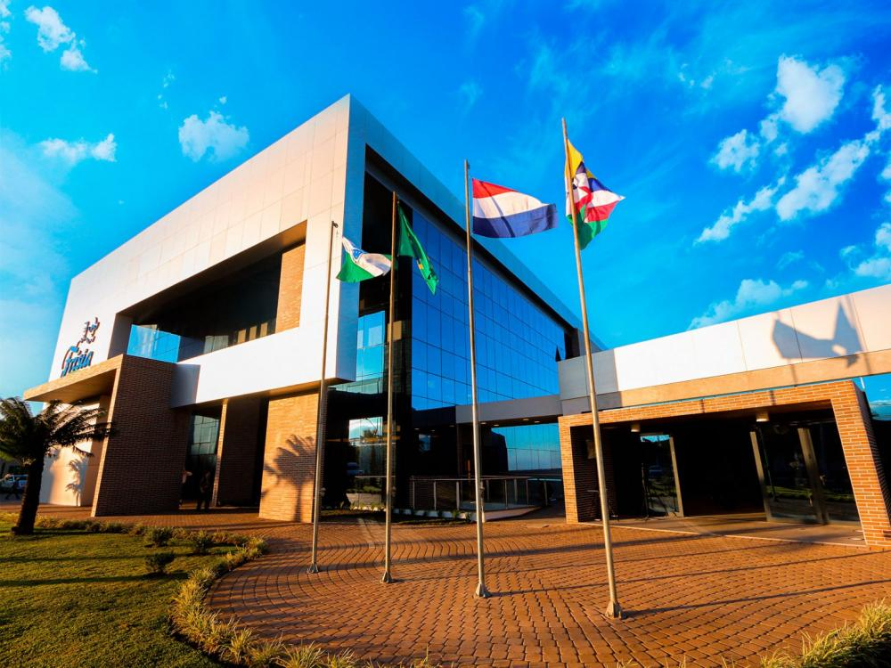

Concurso Agrinho. Do Campo à Cidade colhendo oportunidades!
Bem-vindo à Frisía
A Frisía é uma renomada cooperativa agrícola brasileira, com sede em Camaquã, Rio Grande do Sul. Com décadas de experiência no setor, a Frisia se destaca pela excelência na produção de leite, grãos e outros produtos agrícolas. Comprometida com a inovação e a sustentabilidade, a empresa oferece soluções completas para seus associados, incluindo tecnologia avançada, consultoria técnica e suporte para otimização das práticas agrícolas e pecuárias. A Frisia é sinônimo de tradição e confiança no agronegócio, promovendo o desenvolvimento sustentável e a prosperidade no campo.

Serviços
Consultoria Agrícola
Oferecem serviços de consultoria especializados para ajudar os associados a maximizar a produtividade e eficiência de suas propriedades.
Produção de Leite
Com décadas de experiência na produção de leite, a Frisia garante produtos de alta qualidade, provenientes de práticas de manejo sustentáveis e tecnologicamente avançadas. Nossos processos garantem um leite fresco e de alta qualidade para nossos clientes e parceiros.
Inovação e Tecnologia
Investem continuamente em tecnologia e inovação para oferecer soluções modernas que atendem às necessidades do agronegócio. De sistemas de monitoramento avançados a equipamentos de última geração, a Frisia está na vanguarda da tecnologia agrícola.
Projetos
A Frisia está constantemente envolvida em projetos que visam melhorar a qualidade de vida no campo e promover práticas agrícolas sustentáveis. Entre nossos projetos estão iniciativas de preservação ambiental, programas de educação e capacitação para nossos associados e investimentos em infraestrutura para modernização das operações agrícolas.
"A parceria com a Frisia transformou nossa produção. A consultoria e o suporte técnico foram essenciais para aumentar nossa produtividade e melhorar a qualidade do leite." - João Silva, Produtor Rural
"A Frisia é uma aliada crucial no nosso crescimento. Com suas soluções tecnológicas, conseguimos otimizar nossos processos e alcançar novos patamares." - Maria Oliveira, Cooperada